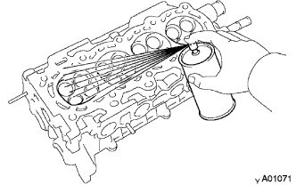
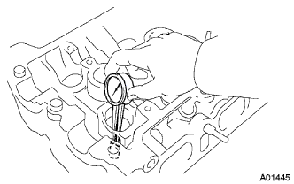

Cylinda Hetted ASSY Overhaul (Detached / Dissolved) |
| 1. Remove the valve lifter |
| 2. Remove the oil control valve filter |
With Hexagon wrench 8, with head tepacuskrug No.Remove 2.
 |
Remove the oil control valve filter and gasket.
| 3. Remove the intake valve |
 |
Use the SST to remove the retainer lock and remove the retainer, compression spring and valve.
| 4. Remove the exhaust valve |
Use the SST to remove the retainer lock and remove the retainer, compression spring and valve.
| 5. Valve stem oil seal or O ring removed |
Use the needle nose pliers to remove the oil seal.
| 6. Remove the valve spring sheet |
| 7. Remove the union |
| 8. Stud bolts removal |
Use a torxo wrench to remove the stud bolt.
| 9. Camshaft bearing cap setting ring pin removed |
| 10. Cylinder headdo strain inspection |
Use a direct regulation and a chickness gauge to measure the distortion of the lower side of the cylinder head and the manifold mounting surface.
| 11. Cylinder headdo crack inspection |
|  |
The dyeing penetration exploring method (red check) confirms that the cylinder head does not crack.
| 12. Intake valve inspection |
Measure the overall length using a caliper.
 |
The outer diameter of the stem is measured using a micrometer.
Use caliper to measure the thickness of the valve head.
| 13. Exhaust valve inspection |
Measure the overall length using a caliper.
The outer diameter of the stem is measured using a micrometer.
Use caliper to measure the thickness of the valve head.
| 14. Outa Compression Spring Inspection |
 |
The free length is measured using a caliper.
 |
The right angle is measured using a right angle ruler.
| 15. Valve Guide Butsu Tsushiyu Oil Clearance Inspection |
Use the caliper gauge to measure the inner diameter of the valve guide bush.
 |
Calculate the oil clearance from the inner diameter of the valve guide bush and the outer diameter of the valve stem.
| 16. Intake valve guidebush is removed |
 |
Warm the cylinder head to 80-100 ° C.
 |
Use the SST to punch the valve guide bush into the combustion chamber side.
| 17. Exhaust valve guidebush is removed |
Warm the cylinder head to 80-100 ° C.
Use the SST to punch the valve guide bush into the combustion chamber side.
| 18. Intake valve guidebush installation |
Use the caliper gauge to measure the inside diameter of the hole mounting of the cylinder head.
| Bush mounting hole | Bush size |
|---|---|
| 9.685-9.706mm | STD |
| 9.735-9.755mm | O / S |
|  |
Warm the cylinder head to 80-100 ° C.
Use the SST to hit the new valve guide bush to the standard amount.
 |
Use a handler to polish the inner diameter of the valve guide bush and use the oil clearance standard.
| 19. Exhaust valve guidebush installation |
Use the caliper gauge to measure the inside diameter of the hole mounting of the cylinder head.
| Bush mounting hole | Bush size |
|---|---|
| 9.685-9.706mm | STD |
| 9.735-9.755mm | O / S |
Warm the cylinder head to 80-100 ° C.
Use the SST to hit the new valve guide bush to the standard amount.
Use a handler to polish the inner diameter of the valve guide bush and use the oil clearance to the standard value.
| 20. Valve seat inspection |
Apply Komyo -dan lightly to the valve face.
Press the valve to the valve seat lightly.
Inspect the hit position of the valve face and the valve seat.
If there is no hit over all the valve face, replace the valve.
If there is no hit over the valve sheet, fix the valve sheet.
Confirm that the hit of the valve seat is 1.0-1.4 mm in the center in the center.
| 21. Intake valve seat modification |
 |
If the hit surface of the seat is high, modify it using a 20 ° and 45 ° cutter head.
If the hitting surface of the sheet is low, fix it using a 45 ° and 75 ° cutter head.
Use the compound to perform the valve arrangement.
After the matching, check the hit surface of the valve.
| 22. Exome Storbulve Seat Correction |
If the hit surface of the seat is high, modify it using a 20 ° and 45 ° cutter head.
If the hitting surface of the sheet is low, fix it using a 45 ° and 75 ° cutter head.
Use the compound to perform the valve arrangement.
After the matching, check the hit surface of the valve.
| 23. Valvarifta inspection |
 |
Use a micrometer to measure the outer diameter of the bulburifta.
| 24. Valbrifta oil clearance inspection |
Use the caliper gauge to measure the inner diameter of the cylinder head hole.
 |
Calculate the oil clearance from the outer diameter and the inner diameter of the lift hole.
| 25. Camshaft inspection |
Camshaft swing inspection
Set the camshaft on the V block.
 |
Use a dial gauge to measure the camshaft swing.
Cam height inspection
 |
The cam height is measured using a micrometer.
Camshaft journal inspection
The journal portion outer diameter is measured using a micrometer.
| 26. Camshaft No.2 inspection |
Camshaft swing inspection
Set the camshaft on the V block.
Use a dial gauge to measure the camshaft swing.
Cam height inspection
The cam height is measured using a micrometer.
Camshaft journal inspection
The journal portion outer diameter is measured using a micrometer.
| 27. Camshaft Thrast Clearance Inspection |
Camshaft and camshaft No.Attach 2 to the cylinder head.
Use the dial gauge to measure the thrust clearance of each camshaft.
| 28. Camshaft oil clearance inspection |
Clean the camshaft and bearing cap.
Set the camshaft on the cylinder head.
Set the press gauge in the axial direction of the camshaft journal.
Attach the camshaft bearing cap.
Take off the bearing cap.
 |
Measure the widest part of the press gauge.
| 29. Camshaft bearing cap setting ring pin mounting |
 |
Use a plastic hammer to driven the ring pin to the standard.
| 30. Stud bolts installation |
Attach a stud bolt using a Turks socket wrench.

| 31. Union installation |
 |
Use paint to draw a line to the position in the figure.
 |
Apply Adherive 1324 to the inner periphery of the cylinder head.
Use a press to press the union to the position of the line.
| Union | Amount of protruding |
|---|---|
| a | 29 M |
| B | 44 M |
| 32. Valve stem oil seal or O ring installation |
 |
Apply a small amount of engine oil to the lip of the new oil seal.
 |
Use SST to attach an oil seal.
| 33. Intake valve installation |
 |
Attach valves, valve spring sheets, springs and retainers.
|
Use SST to attach a retainal lock.
 |
Use a ping -punch (5mm) to hit the valve chip part and calm the valve spring.
| 34. Installation of exhaust valve |
Attach valves, valve spring sheets, springs and retainers.
Use SST to attach a retainal lock.
Use a ping -punch (5mm) to hit the valve chip part and calm the valve spring.
| 35. Installation of oil control valve filter |
Confirm that there is no attachment of foreign matter in the mesh part.
 |
Using hexagon wrench 8, with a new gasket with with head tepus cuplet.Attach 2.
| 36. Attach the valve lifter |
Apply a small amount of engine oil to the bulburifta.
Attach the balbrifta to the cylinder head.
Confirm that Valbrifta rotates smoothly.